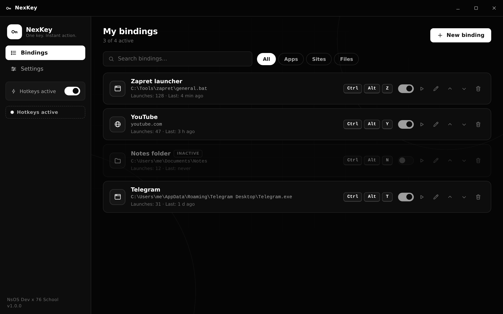

One key. Instant action. Hotkey launcher for apps, sites and files - living in the background 24/7.

No colors, no noise, no emojis. Strict monochrome interface with smooth animations.
Combinations with Ctrl, Alt, Shift and Win/Cmd work from any application, even in games and fullscreen.
Launch an .exe or .bat script, open a website in your browser, or open any file or folder.
Starts with the system, sits in the tray, survives reboots. The close button just hides the window.
Optional elevated launch for Windows tools that require UAC - with a visible prompt every time.
Launch counters and last-run time for every binding. Reset everything with one button.
The whole configuration is one JSON file. Back it up, move it to another PC, share it.
From download to a working hotkey - about one minute.
Install NexKey and enable "Start with system". It hides into the tray and stays there.
Add a binding: pick an app, a site or a file. Example: zapret\general.bat for one-key YouTube access.
Assign a hotkey like Ctrl+Alt+Z. It works everywhere - today, tomorrow and after every reboot.
Free and open source under the MIT license. Windows 10/11 (installer or portable) and macOS (Intel, Apple Silicon).